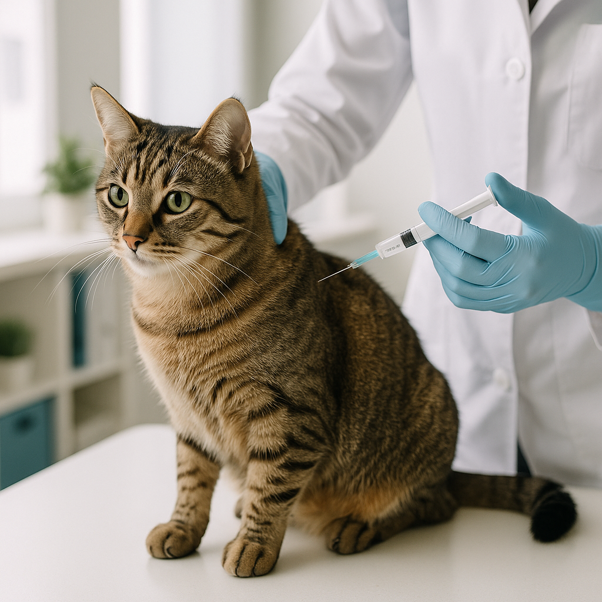

Vacinação para Gatos: Guia Completo

Por Plantas & Gatos - Seu guia de confiança sobre cuidados e saúde felina
A vacinação é uma das formas mais eficazes de proteger a saúde do seu gato. Mesmo os felinos que vivem exclusivamente dentro de casa estão expostos a riscos — seja por contato indireto com vírus e bactérias trazidos em roupas e calçados, seja em situações de emergência, como uma fuga ou necessidade de internação veterinária.
💉 Vacinas Essenciais
V4 ou V5 – Protegem contra rinotraqueíte, calicivirose, panleucopenia e, no caso da V5, também contra clamidiose. São vacinas de vírus mortos ou modificados, desenvolvidas para estimular a imunidade sem causar a doença.
Raiva – Obrigatória em diversos estados do Brasil, protege contra uma doença fatal e de risco também para humanos. A raiva é uma zoonose sem cura após o aparecimento dos sintomas.
📅 Quando Vacinar?
O protocolo básico começa por volta das 8 semanas de vida do filhote, com reforços a cada 3-4 semanas até completar a série inicial (normalmente 3 doses). Depois, os reforços passam a ser anuais ou trienais, dependendo da avaliação do veterinário e do tipo de vacina utilizada.
Gatos adultos sem histórico vacinal também podem iniciar o protocolo a qualquer momento, geralmente com duas doses iniciais e posterior reforço anual.
🐾 Por que é tão importante?
Doenças como panleucopenia (também chamada de "parvovirose felina") e rinotraqueíte felina são altamente contagiosas e podem levar à morte, especialmente em filhotes e gatos imunossuprimidos. A vacinação não protege apenas o seu gato, mas contribui para o controle das doenças na comunidade felina.
🦠 Principais Doenças Cobertas pelas Vacinas
- Panleucopenia Felina (V4/V5) – Causa febre alta, vômitos intensos, diarréia severa e queda drástica nos glóbulos brancos. Altamente fatal em filhotes não vacinados.
- Rinotraqueíte Felina (V4/V5) – Doença respiratória causada por herpesvírus, provoca espirros, secreção nasal e ocular, febre e úlceras na córnea. Pode tornar-se crônica.
- Calicivirose Felina (V4/V5) – Causa sintomas respiratórios, úlceras na boca e língua, febre e, em alguns casos, pneumonia. Cepas mais agressivas podem ser fatais.
- Clamidiose Felina (V5) – Infecção bacteriana que afeta principalmente os olhos, causando conjuntivite persistente e, ocasionalmente, sintomas respiratórios.
- Raiva – Vírus que ataca o sistema nervoso, fatal em 100% dos casos após manifestação dos sintomas. Transmissível para humanos.
⚠️ Importante: Limitações da Vacinação
Mesmo com a vacinação em dia, alguns gatos podem contrair as doenças, embora geralmente de forma mais branda. Isso ocorre porque:
- Nenhuma vacina oferece 100% de proteção;
- Existem diferentes cepas virais, e algumas podem não estar cobertas pela vacina;
- A resposta imunológica varia entre indivíduos;
- Gatos imunossuprimidos podem não desenvolver imunidade adequada.
🩺 Cuidados Especiais: FIV e FeLV
Gatos com FIV (Imunodeficiência Felina) ou FeLV (Leucemia Felina) requerem atenção especial quanto à vacinação:
Para vacinas V4/V5: A maioria dos veterinários considera seguro vacinar gatos FIV+ e FeLV+ com vacinas de vírus morto ou recombinante. Vacinas de vírus vivo modificado devem ser evitadas nesses casos, pois podem causar a doença que deveriam prevenir.
Para vacina antirrábica: Geralmente é considerada segura e recomendada, pois a raiva é fatal e representa risco de saúde pública.
Recomendação: Sempre informe ao veterinário se seu gato é FIV+ ou FeLV+. O profissional avaliará o tipo de vacina mais seguro e se os benefícios superam os riscos em cada caso individual.
🔬 Sobre a Vacina Contra FeLV
A vacina contra Leucemia Felina (FeLV) é especialmente recomendada para:
- Gatos com acesso à rua;
- Ambientes com múltiplos gatos;
- Gatos que terão contato com felinos de status FeLV desconhecido.
Importante: Esta vacina não deve ser aplicada em gatos já positivos para FeLV, pois não teria efeito terapêutico. Recomenda-se testar o gato antes da vacinação.
⚠️ Atenção aos Sinais Pós-Vacinação
Após a aplicação, é comum observar:
- Sonolência leve por 24-48 horas;
- Dor ou pequeno nódulo no local da picada;
- Febre baixa.
Procure imediatamente o veterinário se houver:
- Vômito persistente;
- Dificuldade respiratória ou falta de ar;
- Inchaço facial ou nas patas;
- Letargia extrema;
- Colapso ou convulsões.
Essas reações, embora raras, podem indicar anafilaxia ou outra reação adversa grave.
✅ Dica Final
Mantenha sempre a carteirinha de vacinação em dia e peça ao veterinário orientação personalizada sobre o protocolo ideal para seu gato, considerando idade, estilo de vida, condições de saúde e prevalência de doenças na sua região. A vacinação é um ato de cuidado e responsabilidade com a saúde do seu felino e de toda a comunidade.
← Voltar para o blog